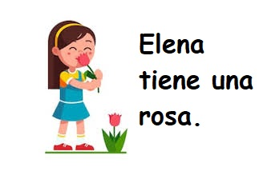

Welcome to our Lesson 2! We will learn a bit about some most common verbs and how to make difference between genders.
There are two genders in Spanish language - masculine and feminine. Can you tell by looking at the drawing bellow which words are masculine and which one are feminine? Is 'niño' feminine or masculine? And how about 'niña'? These are also called natural genders, because it totally makes sense for a word 'girl' to have feminine gender, right? Basic rule for all the words is that words ending in -o are masculine, and words ending in -a are feminine. There are some exceptions, but for now try to memorize this general rule.
So many new words in that drawing! Let's take it step by step. If you are talking about yourself, in English you would start a sentence with 'I am...'. And that's exactly what 'Yo soy' means in Spanish! Again, this 'Y' will be pronounced the same as 'LL' in the word 'llamas'. Remember that one? Easy, right? There is only one small rule: if you see this letter alone, it means 'and' and you will pronounce it as 'E' in English. Try to find examples of this in the drawing above.
One of the kids from the first drawing is talking in plural. Can you guess which one? If you said the second one from the left, you are right! 'Nosotros somos' means 'We are'. And what about the first one? He is talking about his friend. Here is another new word: amigo. Sounds cool, right? Now let's practice this! Try to write a sentence using the words you've learned so far. Look at the image on the right where we sum up things that we learned with some new words added. Can you tell what they mean? Use this as an example:
Me llamo Ana. Soy niña. Mi amigo es niño. ¿Y tú cómo te llamas?
You will say yo tengo when you want to express that you own or have something. How would you say in Spanish I have friends? If you said Yo tengo amigos, you were right!
If you are talking about someone else - a third person, check the image on the right to see the correct form.
